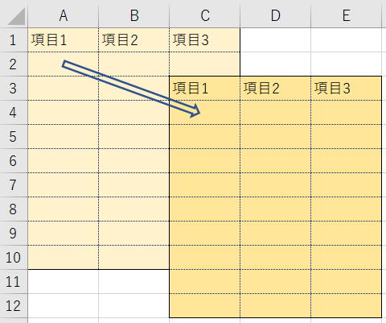

マクロ作成後に表位置がずれた場合の対処

マクロVBAの最も不便なところは、シートでセルをずらしてもセル参照が自動で変更されない事です。
しかし、マクロVBAの記述は自動で変更されません。
B2セルをシートでずらしても、Range("B2")もCells(2, 2)も変わりません。
要所位置を名前定義しておいたりテーブル化しておくことで、相対位置だけでVBAを記述し自動で対応することはできます。
一旦完成した後に、１行目は余白行にしたいとか、A列は空いていた方が見やすいとか・・・
そうなると、マクロの修正が大変なことがあります。
列数がConstやEnumにしてあったとしても、その部分の修正は必要です。
表位置がずれた場合の対処
Dim i As Long
Dim LastRow As Long
With Worksheets("Sheet1")
LastRow = .Cells(Rows.Count, 1).End(xlUp).Row
For i = 2 To LastRow
.Cells(i, 3) = .Cells(i, 1) + .Cells(i, 2)
'・・・いろいろな処理・・・
Next
End With
まあ、このようなVBAコードがあったとして、
１行目を空けたい、ついでに、A列も空けたい。
そんな場合は、どうしますか？
Dim i As Long
Dim LastRow As Long
With Worksheets("Sheet1")
LastRow = .Cells(Rows.Count, 2).End(xlUp).Row
For i = 3 To LastRow
.Cells(i, 4) = .Cells(i, 2) + .Cells(i, 3)
'・・・いろいろな処理・・・
Next
End With
上の赤太字が、修正対象部分になりますね。
もちろん、「・・・いろいろな処理・・・」この中が大量に修正が必要になります。
Dim i As Long
Dim LastRow As Long
With Worksheets("Sheet1").Cells(2, 2)
LastRow = .Cells(Rows.Count - 1, 2).End(xlUp).Row
For i = 2 To LastRow - 1
.Cells(i, 3) = .Cells(i, 1) + .Cells(i, 2)
'・・・いろいろな処理・・・
Next
End With
「・・・いろいろな処理・・・」
本来多くの変更が必要なこの部分については手を付けなくても良くなります。
もちろん、当然コード内容によりますが、ほとんど修正は必要なくなります。
理解できますか？
With Worksheets("Sheet1")
.Cells(行,列)
この行列は、A1セルを起点とした相対位置の指定になります。
.Cells(2, 2)は、2行2列目のB2になります。
Worksheets("Sheet1").Cells(2, 2)
.Cells(行,列)
この行列は、Cells(2, 2)を起点とした相対位置の指定になります。
.
CellsはRangeオブジェクトであり、RangeオブジェクトにはCellsプロパティがあります。
このCellsプロパティの引数は、元のRangeオブジェクトの先頭（左上）セルからの相対位置指定になっています。
つまり、
Cells(2, 2).Cells(2, 2)
RAnge("B2").Cells(2, 2)
これらは、B2セルを起点、つまりB2を(1,1)としての相対位置なのでC3セルになります。
完成したVBAコードは、あまり良いVBAとは言えませんが、修正ミスによる誤動作で悩むよりはマシでしょうか。
もちろん、最初から表位置が変更になる事を考慮して、コーディングしておけば問題ないのですが、
なかなか毎回そのようにはいかない事も多いでしょう。
いざと言う時の、裏ワザとして覚えておくとよいと思います。
表位置がずれることを想定したVBA
Dim ws As Worksheet
Dim startCell As Range
Dim i As Long
Dim LastRow As Long
Set ws = Worksheets("Sheet1")
Set startCell = ws.Range("C3")
With startCell
LastRow = ws.Cells(ws.Rows.Count, .Column).End(xlUp).Row
For i = 2 To LastRow - .Row + 1
.Cells(i, 3) = .Cells(i, 1) + .Cells(i, 2)
'・・・いろいろな処理・・・
Next
End With
Dim ws As Worksheet
Dim myRange As Range
Dim i As Long
Dim LastRow As Long
Set ws = Worksheets("Sheet1")
Set myRange = ws.Range("C3").CurrentRegion
With myRange
LastRow = .Rows.Count
For i = 2 To LastRow
.Item(i, 3) = .Item(i, 1) + .Item(i, 2)
'・・・いろいろな処理・・・
Next
End With
C3セルを名前定義してあればなお良いでしょう。
参考として、2通りの書き方をしてみました。
工夫をすれば、もっといろいろな書き方ができます。
.Cells(...)
.Item(...)
CellsもItemも基のRangeオブジェクトの先頭（左上）セルからの相対位置指定になります。
Offsetを使っても良いです。
テーブルならずれても問題ありません
Sub sample()
Dim ws As Worksheet
Set ws = ActiveSheet
Dim tbl As ListObject
Set tbl = ws.ListObjects("テーブル1")
Dim col As Long
col = tbl.ListColumns("列3").Index
Dim myRange As Range
For Each myRange In tbl.DataBodyRange.Columns(col)
myRange = "[@列1]+[@列2]"
Next
End Sub
テーブルは、表範囲全体に名前定義されている状態なので、表位置がずれてもVBAの変更は基本的に発生しません。
表位置が度々ずれたりするのであれば、テーブルにしておくことでVBAの保守性はとても良くなります。
同じテーマ「マクロVBA技術解説」の記事
マクロ作成後に表位置がずれた場合の対処
ExecuteExcel4Macroについて
再帰呼出しについて（再帰プロシージャー）
フィボナッチ数列（再帰呼び出し）
文字列でのセル参照と文字列の計算式について（Evaluate,INDIRECT）
リボンを非表示、2003以前ならメニューを非表示
印刷ページ設定の余白をセンチで指定する（CentimetersToPoints）
文字列としてのプロシージャー名を起動する方法（Run,OnTime）
ドキュメントの作成者を取得（GetObject,BuiltinDocumentProperties）
画像サイズ（横x縦）の取得について
文字種（ひらがな、全半角カタカナ、半角英大文字等々）の判定
新着記事NEW ・・・新着記事一覧を見る
VBA100本ノック 100本目：WEBから100本ノックのリストを取得｜VBA練習問題（3月3日）
VBA100本ノック 99本目：自動席替え（行列と前後左右が全て違うように）｜VBA練習問題（3月2日）
VBA100本ノック 98本目：席替えルールが守られているか確認｜VBA練習問題（3月1日）
VBA100本ノック 97本目：Accessデータを取得（グループ集計）｜VBA練習問題（2月27日）
VBA100本ノック 96本目：Accessデータを取得（マスタ結合&抽出）｜VBA練習問題（2月26日）
VBA100本ノック 95本目：図形のテキストを検索するフォーム作成｜VBA練習問題（2月24日）
VBA100本ノック 94本目：表範囲からHTMLのtableタグを作成｜VBA練習問題（2月23日）
VBA100本ノック 93本目：複数ブックを連結して再分割｜VBA練習問題（2月22日）
VBA100本ノック 92本目：セルの色を16進で返す関数｜VBA練習問題（2月20日）
VBA100本ノック 91本目：時間計算（残業時間の月間合計）｜VBA練習問題（2月19日）
アクセスランキング ・・・ ランキング一覧を見る
1.最終行の取得（End,Rows.Count）｜VBA入門
2.RangeとCellsの使い方｜VBA入門
3.変数宣言のDimとデータ型｜VBA入門
4.マクロって何？VBAって何？｜VBA入門
5.Range以外の指定方法（Cells,Rows,Columns）｜VBA入門
6.セルのコピー&値の貼り付け（PasteSpecial）｜VBA入門
7.繰り返し処理（For Next)｜VBA入門
8.セルに文字を入れるとは（Range,Value）｜VBA入門
9.マクロはどこに書くの（VBEの起動）｜VBA入門
10.とにかく書いてみよう（Sub,End Sub）｜VBA入門
- ホーム
- マクロVBA応用編
- マクロVBA技術解説
- マクロ作成後に表位置がずれた場合の対処
このサイトがお役に立ちましたら「シェア」「Bookmark」をお願いいたします。
記述には細心の注意をしたつもりですが、
間違いやご指摘がありましたら、「お問い合わせ」からお知らせいただけると幸いです。
掲載のVBAコードは動作を保証するものではなく、あくまでVBA学習のサンプルとして掲載しています。
掲載のVBAコードは自己責任でご使用ください。万一データ破損等の損害が発生しても責任は負いません。